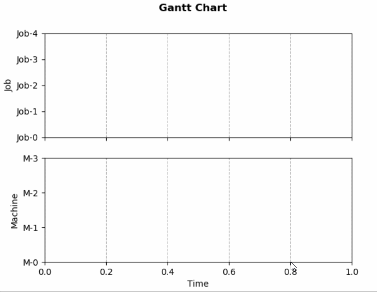
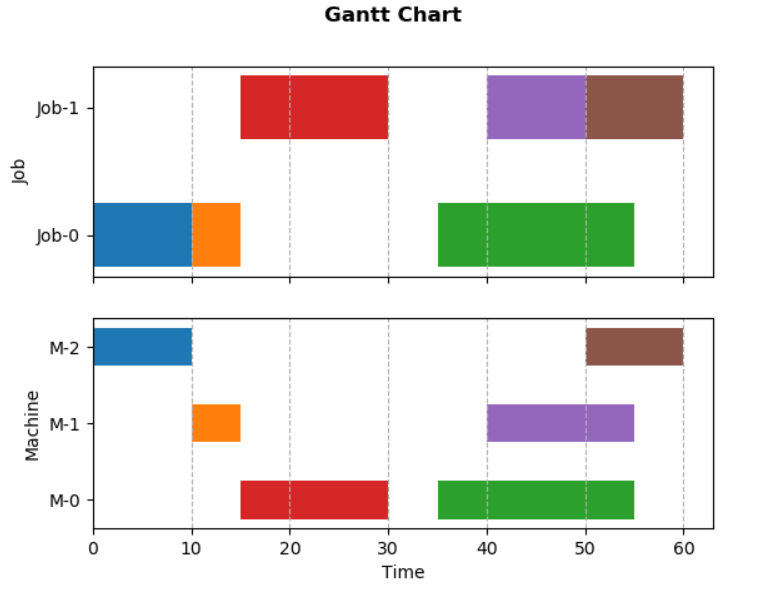

基于matplotlib的动态甘特图¶
发布于：2021-08-15 | 分类：python/vba/cpp
本文在作业车间调度问题背景下，基于matplotlib库实现甘特图并监听数据进行动态更新。文中描述的基本流程也适用于其他类型图表的动态更新。最终效果如下。

从静态甘特图开始¶
甘特图可以用matplotlib的条形图（水平柱状图）来模拟，横轴为时间，纵轴为工序/任务类型；每一个横条(bar)对应一个工序/任务。
matplotlib.pyplot.barh(y, width, height=0.8, left=None, *, align='center', **kwargs)其中，
-
y即为y轴坐标，对应 工序类别，例如从作业的视角即为作业ID，从机器的视角即为机器ID -
width为横条宽度，对应 工序加工时间 -
height为横条高度，没有直接意义 -
left为横条左边界的x坐标，对应 工序开始时间
通常，我们可以画出两类甘特图:
-
项目/作业视角，项目任务或者作业工序的时间安排
-
资源/设备视角，分配到同类资源/设备上的任务/工序的时间安排
本文将其绘制为同一幅图的两张子图，效果及代码如下。其中，工序属性用一个四元组表示：（作业号，机器号，开始时间，加工时长）。

import matplotlib.pyplot as plt
# dummy data:
# - job number
# - machine number
# - task properties: (job id, machine id, start time, duration)
num_job, num_machine = 2, 3
tasks = [(0,2,0,10), (0,1,10,5), (0,0,35,20), (1,0,15,15),(1,1,40,15), (1,2,50,10)]
# create two subplots: job view and machine view
fig, (gnt_job, gnt_machine) = plt.subplots(2,1, sharex=True)
# title
fig.suptitle('Gantt Chart', fontweight='bold')
# axis style for job subplot
job_ids = range(num_job)
gnt_job.set(ylabel='Job', \
yticks=job_ids, \
yticklabels=[f'Job-{i}' for i in job_ids])
gnt_job.grid(which='major', axis='x', linestyle='--')
# axis style for machine subplot
machine_ids = range(num_machine)
gnt_machine.set(xlabel='Time', ylabel='Machine',\
yticks=machine_ids, \
yticklabels=[f'M-{i}' for i in machine_ids])
gnt_machine.grid(which='major', axis='x', linestyle='--')
# plot each task
for (jid,mid,start,duration) in tasks:
gnt_job.barh(jid, duration, left=start, height=0.5)
gnt_machine.barh(mid, duration, left=start, height=0.5)
plt.show()动态更新思路¶
动态更新即修改绘图对象/数据，通常有以下两种做法：
-
交互绘图模式：
plt.ion和plt.ioff -
动画模式：按照一定的频率执行自定义的方法来更新数据，每一次更新数据对应 一帧 的结果
本文采用动画模式：
matplotlib.animation.FuncAnimation(fig, func, frames=None, \
init_func=None, fargs=None, save_count=None, *, cache_frame_data=True, **kwargs)其中几个关键参数：
-
fig为当前画布 -
func为更新图形数据的自定义函数，参数构成如下：def func(frame, *fargs) -> iterable_of_artists其中，
frame为每一帧的参数，由下面的frames参数传入fargs为额外的参数，由下面的fargs传入
-
frames一般为可迭代对象，控制整个动画过程，每一帧传一个元素给func- 如果是可迭代对象：每一帧传一个元素
- 如果是
int，等效为range(frames) - 如果是生成器，每一帧传一个生成的对象
- 如果是
None，每一帧传入当前运行次数
-
init_func是图形初始化函数，在绘制第一帧前调用def init_func() -> iterable_of_artists -
fargs为每一帧调用时传给func的额外的参数 -
interval为频率参数，表示两帧之间的间隔，默认200ms -
repeat表示frames定义的帧数结束后是否重复，默认False -
blit表示是否启用blitting技术优化绘图，默认False
更详细介绍参考：
https://matplotlib.org/stable/api/_as_gen/matplotlib.animation.FuncAnimation.html
关于func的进一步理解
-
一般在
func中更新已经创建好的对象的数据，例如plt.plot()返回的曲线；也可以清除之前的所有对象，再用新的数据重新绘图，特别是对不适用直接更新数据的场合，例如本文涉及的条形图。 -
func的返回值（该帧所有绘图对象组成的可迭代对象）主要用于blit=True时优化绘图显示，所以如果设置blit=False，完全可以不用返回值。
回到作业车间调度背景¶
matplotlib的animation以固定的频率刷新数据，然而，回到作业车间调度问题背景下，我们无法预知在哪一刻会产生一个新解。为了避免无意义的刷新，可以设置一个开关变量，一旦得到了新解则刷新甘特图，否则啥也不做。
针对作业车间调度问题，我们抽象出两个主要的类：
-
Problem：指定问题的规模，然后求解solve()，生成并动态更新甘特图__dynamic_gantt()class Problem: def __init__(self, num_job:int, num_machine:int, solution) -> None: '''Initialize problem with the count of job and machine.''' self.num_job = num_job self.num_machine = num_machine # a solution is a collection of tasks with determined start time self.__solution = solution # type: Solution # implement dynamic gantt chart by animation self.__animation = None def solve(self): '''Solve problem and update Gantt chart dynamically.''' pass def __dynamic_gantt(self, interval:int=1000): '''Create plot and define animation to update data dynamically.''' pass -
Solution：问题的解即一系列属性已知（主要是开始时间）的工序，主要负责更新解update()和绘制甘特图的图形区域plot()。class Solution: Task = namedtuple('Task',['jid','mid', 'start', 'duration']) def __init__(self) -> None: self.__tasks = [] # list[Task] self.__update_plot = False def update(self, num_job:int, num_machine:int): '''Simulate a real solving process to update solution iteratively.''' pass def plot(self, axes:tuple): '''Plot Gantt chart data area.''' pass
求解框架¶
problem.solve()方法模拟求解过程，主线程的甘特图持续监听新解：在获得新解之前，绘图状态为关，保持不动；一旦子线程的求解获得了更好的解，绘图选项被打开，从而更新甘特图。基本框架和相应代码如下：
-
在子线程中求解，即调用
Solution的update()方法 -
在主线程中展示和更新甘特图
problem.__dynamic_gantt()，即通过上一节介绍的animation.FuncAnimation对象以一定的频率执行Solution的plot()方法
class Problem:
def solve(self):
'''Solve problem and update Gantt chart dynamically.'''
# solve problem in child thread
thread = Thread(target=self.__solution.update, \
args=(self.num_job, self.num_machine))
thread.start()
# show gantt chart and listen to the solution update in main thread
self.__dynamic_gantt(interval=1000)
plt.show()定义甘特图动画¶
绘制甘特图的代码和第一节的静态甘特图类似，这里仅给出定义动画的部分：
-
因为无法预知动画的周期，所以
frames参数为空，即传入调用次数i -
虽然以固定频率刷新动画（调用
solution.plot()），但实际图形在获得新解之前并不会被无意义地重复绘制（具体参考前面的介绍和下面的实现）
class Problem:
def __dynamic_gantt(self, interval:int=1000):
'''Create plot and define animation to update data dynamically.'''
...
# animation
self.__animation = FuncAnimation(fig, \
func=lambda i: self.__solution.plot(axes=(gnt_job, gnt_machine)), \
interval=interval, \
repeat=False)更新甘特图¶
更新甘特图的代码如下：
-
self.__update_plot控制了是否真正重绘 -
对于甘特图中的每一个横条，这里采用了先清除再重绘的方式
class Solution:
def plot(self, axes:tuple):
'''Plot Gantt chart data area.'''
# update plot only if the solution is updated
if not self.__update_plot:
return
else:
self.__update_plot = False
# clear plotted bars
for axis in axes:
bars = [bar for bar in axis.containers if isinstance(bar, BarContainer)]
for bar in bars: bar.remove()
# plot new bars
gnt_job, gnt_machine = axes
for task in self.__tasks:
gnt_job.barh(task.jid, task.duration, left=task.start, height=0.5)
gnt_machine.barh(task.mid, task.duration, left=task.start, height=0.5)
# reset x-limit
for axis in axes:
axis.relim()
axis.autoscale()最后，完整代码参考：
https://github.com/dothinking/dothinking.github.io/tree/master/samples/gantt